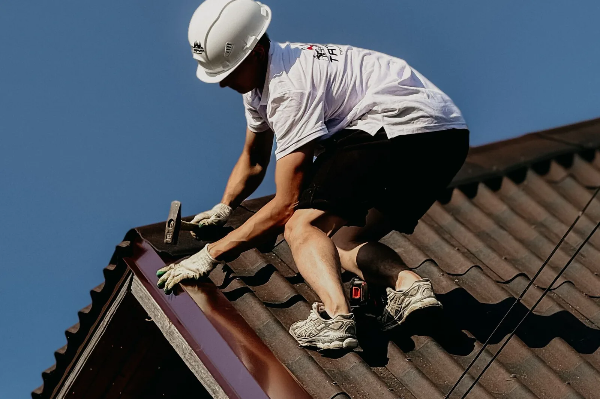
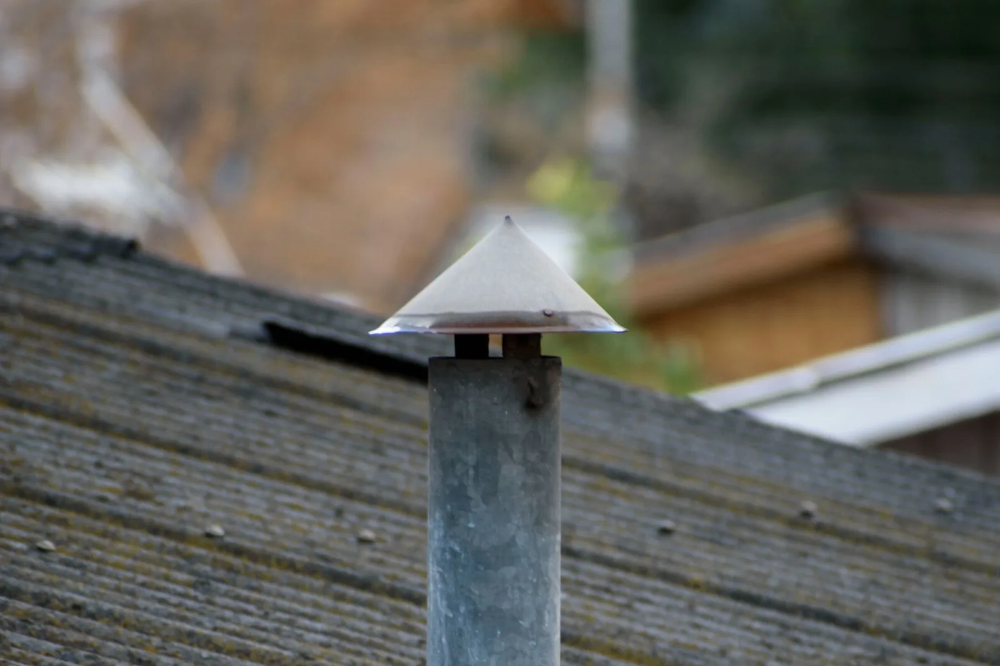

Paslauga 02
Skardinimo darbai
Kraigai, vėjalentės, karnizai, sąlajos ir kitos vietos, kur stogas turi būti sandarus. Skardos detales gaminame patys, todėl jas galime išlankstyti pagal jūsų stogo matmenis.

Kur reikia skardinimo
- KraigaiViršutinė vieta, kur susitinka du šlaitai. Skardos juosta uždengia sandūrą ir neleidžia vandeniui patekti po danga.
- VėjalentėsŠlaito kraštai ties frontonu. Skarda uždengia kraštą ir saugo jį nuo lietaus ir vėjo.
- KarnizaiApatinis stogo kraštas, nuo kurio nuteka vanduo. Karnizo skarda nukreipia jį į lietaus nuvedimo sistemą.
- SąlajosVieta, kur susitinka du šlaitai ir sutekėjęs vanduo nuteka žemyn. Čia skarda turi būti ypač sandari.
- Kitos vietosPasakykite, kur stogas prateka ar kur trūksta skardos, ir pažiūrėsime.
Kodėl svarbus sandarumas
Stogai dažnai prateka ne per pačią dangą, o per sandūras, kampus ir kraštus. Todėl skardinimą verta atlikti kartu su stogo dengimu. Jei stogas jau prateka, skardinimą galima sutvarkyti ir atskirai: apie tai skaitykite puslapyje „Stogo remontas ir dažymas“.

Skardos detalės pagal matmenis
Jei jums reikia tik pačių detalių, išlankstysime jas pagal jūsų matmenis. Matmenis galite atsiųsti skardos lankstinių puslapyje.
Kaip užsisakyti
Aprašykite, kur ir kokio skardinimo reikia: kraigo, vėjalenčių, karnizo, sąlajų ar kitos vietos. Pridėkite nuotraukų, jei jų turite, ir dėl apžiūros sutarsime. Kainą pasakysime apžiūrėję objektą.
Parašykite, ką reikia padaryti
Užtenka kelių sakinių: kur pastatas, koks stogas, kas negerai arba ką norite pasistatyti. Atsakysime ir sutarsime dėl apžiūros.